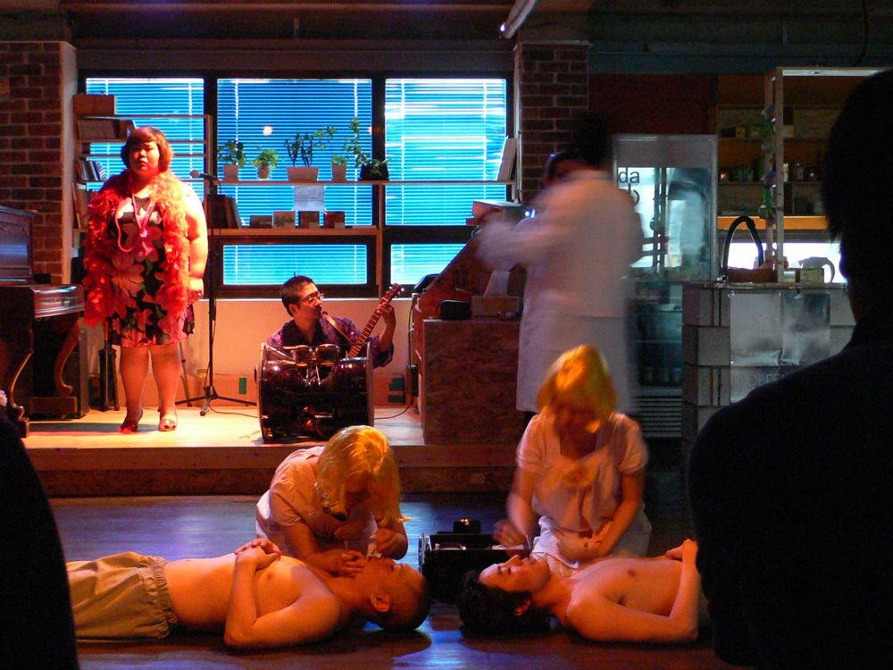

그린피그 > 아카이브 > 빈커가 없으면 나는 너무 외로워
그린피그 공동구성, 윤한솔 연출

관객들은 공연 전 신에 관한 텍스트가 녹음된 카세트테이프를 받아, 공연이 시작되면 함께 재생한다. 미리 녹음된 대사와 배우들의 대사가 동시에 혹은 차례로 들리고, 텍스트와 움직임, 라이브 연주와 노래가 카니발처럼 어우러진다. 종교와 신의 존재에 대한 철학적·과학적 검증을 공연이라는 매개로 시도하며, 텍스트·공간·움직임·음악·조명·영상 모든 것을 통해 소통의 방법을 의심함으로써 신의 존재를 묻는다.
2008.5.28 / 다원예술매개공간
2008.5.30 / 춘천 고슴도치섬 - 춘천마임축제
2008.11.6–8 / 아르코미술관·마로니에 공원 - 서울변방연극제
연출: 윤한솔
드라마투르기: 박상현
음악: 민경현
조명: 최보윤
음향: 신성아, 민경현
영상: 석성석
의상: 이유선
기획: 김혜경
오퍼레이터: 장민호, 전성현
출연(2008 서울변방연극제): 권달빛, 강홍렬, 강효정, 김문호, 류경인, 서승인, 이동영, 이필주, 황미영
이전: 〈그림 같은 시절〉 | 다음: 〈충분히 애도되지 못한 슬픔〉
아카이브로 돌아가기 | 아무 작품이나
발행일 2026.11.10